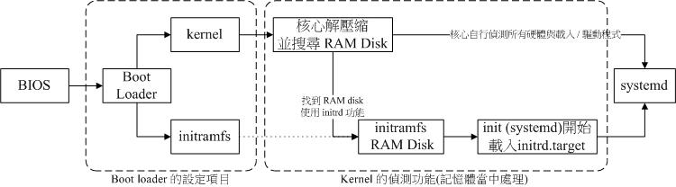

19.1 Linux 的开机流程分析
如果想要多重开机，那要怎么安装系统？如果你的 root 密码忘记了，那要如何救援？如果你的默认登陆模式为图形界面，那要如何在开机时直接指定进入纯文本模式？ 如果你因为 /etc/fstab 设置错误，导致无法顺利挂载根目录，那要如何在不重灌的情况下修订你的 /etc/fstab 让它变成正常？这些都需要了解开机流程， 那你说，这东西重不重要啊？
19.1.1 开机流程一览
既然开机是很严肃的一件事，那我们就来了解一下整个开机的过程吧！好让大家比较容易发现开机过程里面可能会发生问题的地方，以及出现问题后的解决之道！ 不过，由于开机的过程中，那个开机管理程序 （Boot Loader） 使用的软件可能不一样，例如目前各大 Linux distributions 的主流为 grub2，但早期 Linux 默认是使用 grub1 或 LILO ，台湾地区则很多朋友喜欢使用 spfdisk 。 但无论如何，我们总是得要了解整个 boot loader 的工作情况，才能了解为何进行多重开机的设置时， 老是听人家讲要先安装 Windows 再安装 Linux 的原因～
假设以个人计算机架设的 Linux 主机为例 （先回到第零章计算机概论看看相关的硬件常识喔）， 当你按下电源按键后计算机硬件会主动的读取 BIOS 或 UEFI BIOS 来载入硬件信息及进行硬件系统的自我测试， 之后系统会主动的去读取第一个可开机的设备 （由 BIOS 设置的） ，此时就可以读入开机管理程序了。
开机管理程序可以指定使用哪个核心文件来开机，并实际载入核心到内存当中解压缩与执行， 此时核心就能够开始在内存内活动，并侦测所有硬件信息与载入适当的驱动程序来使整部主机开始运行， 等到核心侦测硬件与载入驱动程序完毕后，一个最阳春的操作系统就开始在你的 PC 上面跑了。
主机系统开始运行后，此时 Linux 才会调用外部程序开始准备软件执行的环境，并且实际的载入所有系统运行所需要的软件程序哩！ 最后系统就会开始等待你的登陆与操作啦！简单来说，系统开机的经过可以汇整成下面的流程的：
- 载入 BIOS 的硬件信息与进行自我测试，并依据设置取得第一个可开机的设备；
- 读取并执行第一个开机设备内 MBR 的 boot Loader （亦即是 grub2, spfdisk 等程序）；
- 依据 boot loader 的设置载入 Kernel ，Kernel 会开始侦测硬件与载入驱动程序；
- 在硬件驱动成功后，Kernel 会主动调用 systemd 程序，并以 default.target 流程开机；
大概的流程就是上面写的那个样子啦，你会发现 systemd 这个家伙占的比重非常重！ 所以我们才会在第十六章的 pstree 指令中谈到这家伙。 那每一个程序的内容主要是在干嘛呢？下面就分别来谈一谈吧！
19.1.2 BIOS, boot loader 与 kernel 载入
我们在第二章曾经谈过简单的开机流程与 MBR 的功能，以及大容量磁盘需要使用的 GPT 分区表格式等。 详细的数据请再次回到第二章好好的阅读一下，我们这里为了讲解方便起见，将后续会用到的专有名词先做个综合解释：
- BIOS：不论传统 BIOS 还是 UEFI BIOS 都会被简称为 BIOS；
MBR：虽然分区表有传统 MBR 以及新式 GPT，不过 GPT 也有保留一块相容 MBR 的区块，因此，下面的说明在安装 boot loader 的部份， 鸟哥还是简称为 MBR 喔！总之，MBR 就代表该磁盘的最前面可安装 boot loader 的那个区块就对了！
BIOS, 开机自我测试与 MBR/GPT
我们在第零章的计算机概论就曾谈过计算机主机架构， 在个人计算机架构下，你想要启动整部系统首先就得要让系统去载入 BIOS （Basic Input Output System），并通过 BIOS 程序去载入 CMOS 的信息，并且借由 CMOS 内的设置值取得主机的各项硬件设置， 例如 CPU 与周边设备的沟通频率啊、开机设备的搜寻顺序啊、硬盘的大小与类型啊、 系统时间啊、各周边总线的是否启动 Plug and Play （PnP, 随插即用设备） 啊、 各周边设备的 I/O 位址啊、以及与 CPU 沟通的 IRQ 岔断等等的信息。
在取得这些信息后，BIOS 还会进行开机自我测试 （Power-on Self Test, POST） [1]。 然后开始执行硬件侦测的初始化，并设置 PnP 设备，之后再定义出可开机的设备顺序，接下来就会开始进行开机设备的数据读取了。
由于我们的系统软件大多放置到硬盘中嘛！所以 BIOS 会指定开机的设备好让我们可以读取磁盘中的操作系统核心文件。 但由于不同的操作系统他的文件系统格式不相同，因此我们必须要以一个开机管理程序来处理核心文件载入 （load） 的问题， 因此这个开机管理程序就被称为 Boot Loader 了。那这个 Boot Loader 程序安装在哪里呢？就在开机设备的第一个扇区 （sector） 内，也就是我们一直谈到的 MBR （Master Boot Record, 主要开机记录区）。
那你会不会觉得很奇怪啊？既然核心文件需要 loader 来读取，那每个操作系统的 loader 都不相同， 这样的话 BIOS 又是如何读取 MBR 内的 loader 呢？很有趣的问题吧！其实 BIOS 是通过硬件的 INT 13 中断功能来读取 MBR 的，也就是说，只要 BIOS 能够侦测的到你的磁盘 （不论该磁盘是 SATA 还是 SAS 接口），那他就有办法通过 INT 13 这条信道来读取该磁盘的第一个扇区内的 MBR 软件啦！[2]这样 boot loader 也就能够被执行啰！

Tips 我们知道每颗硬盘的最前面区块含有 MBR 或 GPT 分区表的提供 loader 的区块，那么如果我的主机上面有两颗硬盘的话， 系统会去哪颗硬盘的最前面区块读取 boot loader 呢？这个就得要看 BIOS 的设置了。 基本上，我们常常讲的“系统的 MBR”其实指的是 第一个开机设备的 MBR 才对！ 所以，改天如果你要将开机管理程序安装到某颗硬盘的 MBR 时， 要特别注意当时系统的“第一个开机设备”是哪个，否则会安装到错误的硬盘上面的 MBR 喔！重要重要！
- Boot Loader 的功能
刚刚说到 Loader 的最主要功能是要认识操作系统的文件格式并据以载入核心到内存中去执行。 由于不同操作系统的文件格式不一致，因此每种操作系统都有自己的 boot loader 啦！用自己的 loader 才有办法载入核心文件嘛！那问题就来啦，你应该有听说过多重操作系统吧？也就是在一部主机上面安装多种不同的操作系统。 既然你 （1）必须要使用自己的 loader 才能够载入属于自己的操作系统核心，而 （2）系统的 MBR 只有一个，那你怎么会有办法同时在一部主机上面安装 Windows 与 Linux 呢？
这就得要回到第七章的磁盘文件系统去回忆一下文件系统功能了。 其实每个文件系统 （filesystem, 或者是 partition） 都会保留一块开机扇区 （boot sector） 提供操作系统安装 boot loader ， 而通常操作系统默认都会安装一份 loader 到他根目录所在的文件系统的 boot sector 上。如果我们在一部主机上面安装 Windows 与 Linux 后，该 boot sector, boot loader 与 MBR 的相关性会有点像下图：
 图19.1.1、boot loader 安装在 MBR, boot sector 与操作系统的关系
图19.1.1、boot loader 安装在 MBR, boot sector 与操作系统的关系
如上图所示，每个操作系统默认是会安装一套 boot loader 到他自己的文件系统中 （就是每个 filesystem 左下角的方框），而在 Linux 系统安装时，你可以选择将 boot loader 安装到 MBR 去，也可以选择不安装。 如果选择安装到 MBR 的话，那理论上你在 MBR 与 boot sector 都会保有一份 boot loader 程序的。 至于 Windows 安装时，他默认会主动的将 MBR 与 boot sector 都装上一份 boot loader！所以啦， 你会发现安装多重操作系统时，你的 MBR 常常会被不同的操作系统的 boot loader 所覆盖啦！ ^_^
我们刚刚提到的两个问题还是没有解决啊！虽然各个操作系统都可以安装一份 boot loader 到他们的 boot sector 中， 这样操作系统可以通过自己的 boot loader 来载入核心了。问题是系统的 MBR 只有一个哩！ 你要怎么执行 boot sector 里面的 loader 啊？这个我们得要回忆一下第二章约略提过的 boot loader 的功能了。boot loader 主要的功能如下：
- 提供菜单：使用者可以选择不同的开机项目，这也是多重开机的重要功能！
- 载入核心文件：直接指向可开机的程序区段来开始操作系统；
- 转交其他 loader：将开机管理功能转交给其他 loader 负责。
由于具有菜单功能，因此我们可以选择不同的核心来开机。而由于具有控制权转交的功能，因此我们可以载入其他 boot sector 内的 loader 啦！不过 Windows 的 loader 默认不具有控制权转交的功能，因此你不能使用 Windows 的 loader 来载入 Linux 的 loader 喔！这也是为啥第二章谈到 MBR 与多重开机时，会特别强调先装 Windows 再装 Linux 的缘故。 我们将上述的三个功能以下面的图示来解释你就看的懂了！（与第二章的图示也非常类似啦！）
 图19.1.2、开机管理程序的菜单功能与控制权转交功能示意图
图19.1.2、开机管理程序的菜单功能与控制权转交功能示意图
如上图所示，我的 MBR 使用 Linux 的 grub2 这个开机管理程序，并且里面假设已经有了三个菜单， 第一个菜单可以直接指向 Linux 的核心文件并且直接载入核心来开机；第二个菜单可以将开机管理程控权交给 Windows 来管理，此时 Windows 的 loader 会接管开机流程，这个时候他就能够启动 windows 了。第三个菜单则是使用 Linux 在 boot sector 内的开机管理程序，此时就会跳出另一个 grub2 的菜单啦！了解了吗？
- 菜单一：MBR（grub2） --> kernel file --> booting
- 菜单二：MBR（grub2） --> boot sector（Windows loader） --> Windows kernel --> booting
- 菜单三：MBR（grub2） --> boot sector（grub2） --> kernel file --> booting
而最终 boot loader 的功能就是“载入 kernel 文件”啦！
- 载入核心侦测硬件与 initramfs 的功能
当我们借由 boot loader 的管理而开始读取核心文件后，接下来， Linux 就会将核心解压缩到内存当中， 并且利用核心的功能，开始测试与驱动各个周边设备，包括储存设备、CPU、网卡、声卡等等。 此时 Linux 核心会以自己的功能重新侦测一次硬件，而不一定会使用 BIOS 侦测到的硬件信息喔！也就是说，核心此时才开始接管 BIOS 后的工作了。 那么核心文件在哪里啊？一般来说，他会被放置到 /boot 里面，并且取名为 /boot/vmlinuz 才对！
[root@study ~]# ls --format=single-column -F /boot
config-3.10.0-229.el7.x86_64 <==此版本核心被编译时选择的功能与模块配置文件
grub/ <==旧版 grub1 ，不需要理会这目录了！
grub2/ <==就是开机管理程序 grub2 相关数据目录
initramfs-0-rescue-309eb890d3d95ec7a.img <==下面几个为虚拟文件系统文件！这一个是用来救援的！
initramfs-3.10.0-229.el7.x86_64.img <==正常开机会用到的虚拟文件系统
initramfs-3.10.0-229.el7.x86_64kdump.img <==核心出问题时会用到的虚拟文件系统
System.map-3.10.0-229.el7.x86_64 <==核心功能放置到内存位址的对应表
vmlinuz-0-rescue-309eb890d09543d95ec7a* <==救援用的核心文件
vmlinuz-3.10.0-229.el7.x86_64* <==就是核心文件啦！最重要者！
从上表中的特殊字体，我们也可以知道 CentOs 7.x 的 Linux 核心为 3.10.0-229.el7.x86_64 这个版本！为了硬件开发商与其他核心功能开发者的便利， 因此 Linux 核心是可以通过动态载入核心模块的 （就请想成驱动程序即可），这些核心模块就放置在 /lib/modules/ 目录内。 由于模块放置到磁盘根目录内 （要记得 /lib 不可以与 / 分别放在不同的 partition ！）， 因此在开机的过程中核心必须要挂载根目录，这样才能够读取核心模块提供载入驱动程序的功能。 而且为了担心影响到磁盘内的文件系统，因此开机过程中根目录是以只读的方式来挂载的喔。
一般来说，非必要的功能且可以编译成为模块的核心功能，目前的 Linux distributions 都会将他编译成为模块。 因此 USB, SATA, SCSI... 等磁盘设备的驱动程序通常都是以模块的方式来存在的。 现在来思考一种情况，假设你的 linux 是安装在 SATA 磁盘上面的，你可以通过 BIOS 的 INT 13 取得 boot loader 与 kernel 文件来开机，然后 kernel 会开始接管系统并且侦测硬件及尝试挂载根目录来取得额外的驱动程序。
问题是，核心根本不认识 SATA 磁盘，所以需要载入 SATA 磁盘的驱动程序， 否则根本就无法挂载根目录。但是 SATA 的驱动程序在 /lib/modules 内，你根本无法挂载根目录又怎么读取到 /lib/modules/ 内的驱动程序？是吧！非常的两难吧！在这个情况之下，你的 Linux 是无法顺利开机的！ 那怎办？没关系，我们可以通过虚拟文件系统来处理这个问题。
虚拟文件系统 （Initial RAM Disk 或 Initial RAM Filesystem） 一般使用的文件名为 /boot/initrd 或 /boot/initramfs ，这个文件的特色是，他也能够通过 boot loader 来载入到内存中，然后这个文件会被解压缩并且在内存当中仿真成一个根目录， 且此仿真在内存当中的文件系统能够提供一支可执行的程序，通过该程序来载入开机过程中所最需要的核心模块， 通常这些模块就是 USB, RAID, LVM, SCSI 等文件系统与磁盘接口的驱动程序啦！等载入完成后， 会帮助核心重新调用 systemd 来开始后续的正常开机流程。
图19.1.3、BIOS 与 boot loader 及核心载入流程示意图
如上图所示，boot loader 可以载入 kernel 与 initramfs ，然后在内存中让 initramfs 解压缩成为根目录， kernel 就能够借此载入适当的驱动程序，最终释放虚拟文件系统，并挂载实际的根目录文件系统，就能够开始后续的正常开机流程。 更详细的 initramfs 说明，你可以自行使用 man initrd 去查阅看看。 下面让我们来了解一下 CentOS 7.x 的 initramfs 文件内容有什么吧！ ^_^
# 1\. 先来直接看一下 initramfs 里面的内容有些啥数据？
[root@study ~]# lsinitrd /boot/initramfs-3.10.0-229.el7.x86_64.img
# 首先会调用出 initramfs 最前面文件开始的许多数据介绍，这部份会占用一些容量！
Image: /boot/initramfs-3.10.0-229.el7.x86_64.img: 18M
========================================================================
Early CPIO image
========================================================================
drwxr-xr-x 3 root root 0 May 4 17:56 .
-rw-r--r-- 1 root root 2 May 4 17:56 early_cpio
drwxr-xr-x 3 root root 0 May 4 17:56 kernel
drwxr-xr-x 3 root root 0 May 4 17:56 kernel/x86
drwxr-xr-x 2 root root 0 May 4 17:56 kernel/x86/microcode
-rw-r--r-- 1 root root 10240 May 4 17:56 kernel/x86/microcode/GenuineIntel.bin
========================================================================
Version: dracut-033-240.el7
Arguments: -f
dracut modules: # 开始一堆模块的载入行为
bash
nss-softokn
.....（中间省略）.....
========================================================================
drwxr-xr-x 12 root root 0 May 4 17:56 .
crw-r--r-- 1 root root 5, 1 May 4 17:56 dev/console
crw-r--r-- 1 root root 1, 11 May 4 17:56 dev/kmsg
crw-r--r-- 1 root root 1, 3 May 4 17:56 dev/null
.....（中间省略）.....
lrwxrwxrwx 1 root root 23 May 4 17:56 init -> usr/lib/systemd/systemd
.....（中间省略）.....
drwxr-xr-x 2 root root 0 May 4 17:56 var/lib/lldpad
lrwxrwxrwx 1 root root 11 May 4 17:56 var/lock -> ../run/lock
lrwxrwxrwx 1 root root 10 May 4 17:56 var/log -> ../run/log
lrwxrwxrwx 1 root root 6 May 4 17:56 var/run -> ../run
========================================================================
# 最后则会列出这个 initramfs 里头的所有文件！也就是说，这个 initramfs 文件大概存着两部份，
# 先是文件开始宣告的许多文件部份，再来才是真的会被核心取用的全部附加的文件数据！
从上面我们大概知道了这个 initramfs 里头含有两大区块，一个是事先宣告的一些数据，包括 kernel/x86/microcode/GenuineIntel.bin 这些东西。 在这些数据后面，才是真的我们的核心会去读取的重要文件～如果看一下文件的内容，你会发现到 init 那只程序已经被 systemd 所取代啰！这样理解否？ 好～如果你想要进一步将这个文件解开的话，那得要先将前面的 kernel/x86/microcode/GenuineIntel.bin 之前的文件先去除掉，这样才能够顺利的解开。 因此，得要这样进行：
# 1\. 先将 /boot 下面的文件进行去除前面不需要的文件开始数据部份。
[root@study ~]# mkdir /tmp/initramfs
[root@study ~]# cd /tmp/initramfs
[root@study initramfs]# dd if=/boot/initramfs-3.10.0-229.el7.x86_64.img of=initramfs.gz \
> bs=11264 skip=1
[root@study initramfs]# ll initramfs.gz; file initramfs.gz
-rw-r--r--. 1 root root 18558166 Aug 24 19:38 initramfs.gz
initramfs.gz: gzip compressed data, from Unix, last modified: Mon May 4 17:56:47 2015,
max compression
# 2\. 从上面看到文件是 gzip 压缩文件，所以将它解压缩后，再查阅一下文件的类型！
[root@study initramfs]# gzip -d initramfs.gz
[root@study initramfs]# file initramfs
initramfs: ASCII cpio archive （SVR4 with no CRC）
# 3\. 解开后又产生一个 cpio 文件，得要将它用 cpio 的方法解开！加上不要绝对路径的参数较保险！
[root@study initramfs]# cpio -i -d -H newc --no-absolute-filenames < initramfs
[root@study initramfs]# ll
lrwxrwxrwx. 1 root root 7 Aug 24 19:40 bin -> usr/bin
drwxr-xr-x. 2 root root 42 Aug 24 19:40 dev
drwxr-xr-x. 12 root root 4096 Aug 24 19:40 etc
lrwxrwxrwx. 1 root root 23 Aug 24 19:40 init -> usr/lib/systemd/systemd
-rw-r--r--. 1 root root 42263552 Aug 24 19:38 initramfs
lrwxrwxrwx. 1 root root 7 Aug 24 19:40 lib -> usr/lib
lrwxrwxrwx. 1 root root 9 Aug 24 19:40 lib64 -> usr/lib64
drwxr-xr-x. 2 root root 6 Aug 24 19:40 proc
drwxr-xr-x. 2 root root 6 Aug 24 19:40 root
drwxr-xr-x. 2 root root 6 Aug 24 19:40 run
lrwxrwxrwx. 1 root root 8 Aug 24 19:40 sbin -> usr/sbin
-rwxr-xr-x. 1 root root 3041 Aug 24 19:40 shutdown
drwxr-xr-x. 2 root root 6 Aug 24 19:40 sys
drwxr-xr-x. 2 root root 6 Aug 24 19:40 sysroot
drwxr-xr-x. 2 root root 6 Aug 24 19:40 tmp
drwxr-xr-x. 7 root root 61 Aug 24 19:40 usr
drwxr-xr-x. 3 root root 47 Aug 24 19:40 var
# 看吧！上面几乎就像是一个小型的文件系统根目录耶！这样就能让 kernel 去挂载了！
# 4\. 接下来瞧一瞧到底这个小型的文件系统中，systemd 是要以哪个 target 来执行开机呢？
[root@study initramfs]# ll usr/lib/systemd/system/default.target
lrwxrwxrwx. 1 root root 13 Aug 24 19:40 usr/lib/systemd/system/default.target -> initrd.target
# 5\. 最终，让我们瞧一瞧系统内默认的 initrd.target 相依的所有服务数据吧！
[root@study initramfs]# systemctl list-dependencies initrd.target
initrd.target
├─dracut-cmdline.service
.....（中间省略）.....
├─basic.target
│ ├─alsa-restore.service
.....（中间省略）.....
│ ├─slices.target
│ │ ├─-.slice
│ │ └─system.slice
│ ├─sockets.target
│ │ ├─dbus.socket
.....（中间省略）.....
│ │ └─systemd-udevd-kernel.socket
│ ├─sysinit.target
│ │ ├─dev-hugepages.mount
.....（中间省略）.....
│ │ ├─local-fs.target
│ │ │ ├─-.mount
│ │ │ ├─boot.mount
.....（中间省略）.....
│ │ └─swap.target
│ │ ├─dev-centos-swap.swap
.....（中间省略）.....
│ │ └─dev-mapper-centos\x2dswap.swap
│ └─timers.target
│ └─systemd-tmpfiles-clean.timer
├─initrd-fs.target
└─initrd-root-fs.target
# 依旧通过 systemd 的方式，一个一个的将所有的侦测与服务载入系统中！
通过上面解开 initramfs 的结果，你会知道其实 initramfs 就是一个小型的根目录，这个小型根目录里面也是通过 systemd 来进行管理，同时观察 default.target 的链接，会发现其实这个小型系统就是通过 initrd.target 来开机，而 initrd.target 也是需要读入一堆例如 basic.target, sysinit.target 等等的硬件侦测、核心功能启用的流程， 然后开始让系统顺利运行。最终才又卸载 initramfs 的小型文件系统，实际挂载系统的根目录！
此外，initramfs 并没有包山包海，它仅是带入开机过程会用到的核心模块而已。所以如果你在 initramfs 里面去找 modules 这个关键字的话， 就可以发现主要的核心模块大概就是 SCSI、virtio、RAID 等等跟磁盘相关性比较高的模块就是了！现在由于磁盘大部分都是使用 SATA 这玩意儿， 并没有 IDE 的格式啰！所以，没有 initramfs 的话，你的 Linux 几乎就是不能顺利开机的啦！除非你将 SATA 的模块直接编译到核心去了！ ^_^
在核心完整的载入后，您的主机应该就开始正确的运行了，接下来，就是要开始执行系统的第一支程序： systemd ！
19.1.3 第一支程序 systemd 及使用 default.target 进入开机程序分析
在核心载入完毕、进行完硬件侦测与驱动程序载入后，此时你的主机硬件应该已经准备就绪了 （ready） ， 此时核心会主动的调用第一支程序，那就是 systemd 啰。这也是为啥第十六章的 pstree 指令介绍时，你会发现 systemd 的 PID 号码是一号啦。 systemd 最主要的功能就是准备软件执行的环境，包括系统的主机名称、网络设置、语系处理、文件系统格式及其他服务的启动等。 而所有的动作都会通过 systemd 的默认启动服务集合，亦即是 /etc/systemd/system/default.target 来规划。 另外， systemd 已经舍弃沿用多年的 system V 的 runlevel 了喔！
- 常见的操作环境 target 与相容于 runlevel 的等级
可以作为默认的操作环境 （default.target） 的主要项目有： multi-user.target 以及 graphical.target 这两个。当然还有某些比较特殊的操作环境， 包括在第十七章里面谈到的 rescue.target, emergency.target, shutdown.target 等等，以及本章在 initramfs 里面谈到的 initrd.target 啰！
但是过去的 systemV 使用的是一个称为 runlevel （执行等级） 的概念来启动系统的，systemd 为了相容于旧式的 systemV 操作行为， 所以也将 runlevel 与操作环境做个结合喔！你可以使用下面的方式来查询两者间的对应：
[root@study ~]# ll -d /usr/lib/systemd/system/runlevel*.target | cut -c 28-
May 4 17:52 /usr/lib/systemd/system/runlevel0.target -> poweroff.target
May 4 17:52 /usr/lib/systemd/system/runlevel1.target -> rescue.target
May 4 17:52 /usr/lib/systemd/system/runlevel2.target -> multi-user.target
May 4 17:52 /usr/lib/systemd/system/runlevel3.target -> multi-user.target
May 4 17:52 /usr/lib/systemd/system/runlevel4.target -> multi-user.target
May 4 17:52 /usr/lib/systemd/system/runlevel5.target -> graphical.target
May 4 17:52 /usr/lib/systemd/system/runlevel6.target -> reboot.target
如果你之前已经使用过 systemV 的方式来管理系统的话，那应该会知道切换执行等级可以使用“ init 3 ”转成文字界面，“ init 5 ”转成图形界面吧？ 这个 init 程序依旧是保留下来的，只是 init 3 会相当于 systemctl isolate multi-user.target 就是了！如果做个完整的叠代，这两个东西的对应为：
| SystemV | systemd |
|---|---|
| init 0 | systemctl poweroff |
| init 1 | systemctl rescue |
| init [234] | systemctl isolate multi-user.target |
| init 5 | systemctl isolate graphical.target |
| init 6 | systemctl reboot |
- systemd 的处理流程
如前所述，当我们取得了 /etc/systemd/system/default.target 这一个默认操作界面的设置之后，接下来系统帮我们做了什么呢？ 首先，它会链接到 /usr/lib/systemd/system/ 这个目录下去取得 multi-user.target 或 graphical.target 这两个其中的一 （当然， 鸟哥说的是正常的进入 Linux 操作环境的情况下！），假设我们是使用 graphical.target 好了，接着下来 systemd 会去找两个地方的设置， 就是如下的目录：
- /etc/systemd/system/graphical.target.wants/：使用者设置载入的 unit
- /usr/lib/systemd/system/graphical.target.wants/：系统默认载入的 unit
然后再由 /usr/lib/systemd/system/graphical.target 这个配置文件内发现如下的数据：
[root@study ~]# cat /usr/lib/systemd/system/graphical.target
[Unit]
Description=Graphical Interface
Documentation=man:systemd.special（7）
Requires=multi-user.target
After=multi-user.target
Conflicts=rescue.target
Wants=display-manager.service
AllowIsolate=yes
[Install]
Alias=default.target
这表示 graphical.target 必须要完成 multi-user.target 之后才能够进行，而进行完 graphical.target 之后，还得要启动 display-manager.service 才行的意思。 好了！那么通过同样的方式，我们来找找 multi-user.target 要执行完毕得要载入的项目有哪些呢？
# 先来看看 multi-user.target 配置文件内规范了相依的操作环境有哪些呢？
[root@study ~]# cat /usr/lib/systemd/system/multi-user.target
[Unit]
Description=Multi-User System
Documentation=man:systemd.special（7）
Requires=basic.target
Conflicts=rescue.service rescue.target
After=basic.target rescue.service rescue.target
AllowIsolate=yes
[Install]
Alias=default.target
# 然后看看系统默认要载入的 unit 有哪些？
[root@study ~]# ls /usr/lib/systemd/system/multi-user.target.wants
brandbot.path plymouth-quit.service systemd-logind.service
dbus.service plymouth-quit-wait.service systemd-user-sessions.service
getty.target systemd-ask-password-wall.path
# 使用者自订要载入的 unit 又有哪些呢？
[root@study ~]# ls /etc/systemd/system/multi-user.target.wants
abrt-ccpp.service crond.service mdmonitor.service sshd.service
abrtd.service hypervkvpd.service ModemManager.service sysstat.service
abrt-oops.service hypervvssd.service NetworkManager.service tuned.service
abrt-vmcore.service irqbalance.service postfix.service vmtoolsd.service
abrt-xorg.service kdump.service remote-fs.target vsftpd2.service
atd.service ksm.service rngd.service vsftpd.service
auditd.service ksmtuned.service rsyslog.service
backup2.timer libstoragemgmt.service smartd.service
backup.timer libvirtd.service sshd2.service
通过上面的结果，我们又能知道 multi-usre.target 需要在 basic.target 运行完毕才能够载入上述的许多 unit 哩！然后再去 basic.target 里头找数据等等～ 最终这些数据就可以通过“ systemctl list-dependencies graphical.target ”这个指令来列出所有的相关性的服务啰！这就是 systemd 的调用所需要的服务的流程喔！
Tips 要知道系统的服务启用的流程，最简单的方法就是“ systemctl list-dependencies graphical.target ”这个指令！只是，如果你想要知道背后的配置文件意义， 那就是分别去找出 /etc 与 /usr/lib 下面的 graphical.target.wants/ 目录下的数据就对了！当然，配置文件脚本里面的 Requires 这个设置值所代表的服务， 也是需要是先载入喔！
约略分析一下“ systemctl list-dependencies graphical.target ”所输出的相依属性服务，基本上我们 CentOS 7.x 的 systemd 开机流程大约是这样：
- local-fs.target + swap.target：这两个 target 主要在挂载本机 /etc/fstab 里面所规范的文件系统与相关的内存交换空间。
- sysinit.target：这个 target 主要在侦测硬件，载入所需要的核心模块等动作。
- basic.target：载入主要的周边硬件驱动程序与防火墙相关任务
- multi-user.target 下面的其它一般系统或网络服务的载入
- 图形界面相关服务如 gdm.service 等其他服务的载入
除了第一步骤 local-fs.target, swap.target 是通过 /etc/fstab 来进行挂载的行为之外，那其他的 target 有做啥动作呢？简单得来说说！
19.1.4 systemd 执行 sysinit.target 初始化系统、basic.target 准备系统
如果你自己使用“ systemctl list-dependencies sysinit.target ”来瞧瞧的话，那就会看到很多相依的服务！这些服务你应该要一个一个去查询看看设置脚本的内容， 就能够大致理解每个服务的意义。基本上，我们可以将这些服务归类成几个大项就是了：
- 特殊文件系统设备的挂载：包括 dev-hugepages.mount dev-mqueue.mount 等挂载服务，主要在挂载跟巨量内存分页使用与讯息伫列的功能。 挂载成功后，会在 /dev 下面创建 /dev/hugepages/, /dev/mqueue/ 等目录；
- 特殊文件系统的启用：包括磁盘阵列、网络磁盘 （iscsi）、LVM 文件系统、文件系统对照服务 （multipath） 等等，也会在这里被侦测与使用到！
- 开机过程的讯息传递与动画执行：使用 plymouthd 服务搭配 plymouth 指令来传递动画与讯息
- 日志式登录文件的使用：就是 systemd-journald 这个服务的启用啊！
- 载入额外的核心模块：通过 /etc/modules-load.d/*.conf 文件的设置，让核心额外载入管理员所需要的核心模块！
- 载入额外的核心参数设置：包括 /etc/sysctl.conf 以及 /etc/sysctl.d/*.conf 内部设置！
- 启动系统的乱数产生器：乱数产生器可以帮助系统进行一些密码加密演算的功能
- 设置终端机 （console） 字形
- 启动动态设备管理员：就是 udevd 这个家伙！用在动态对应实际设备存取与设备文件名对应的一个服务！相当重要喔！也是在这里启动的！
不论你即将使用哪种操作环境来使用系统，这个 sysinit.target 几乎都是必要的工作！从上面你也可以看的出来，基本的核心功能、文件系统、文件系统设备的驱动等等， 都在这个时刻处理完毕～所以，这个 sysinit.target 的阶段是挺重要的喔！
执行完 sysinit.target 之后，再来则是 basic.target 这个项目了。 sysinit.target 在初始化系统，而这个 basic .target 则是一个最阳春的操作系统了！ 这个 basic.target 的阶段主要启动的服务大概有这些：
- 载入 alsa 音效驱动程序：这个 alsa 是个音效相关的驱动程序，会让你的系统有音效产生啰；
- 载入 firewalld 防火墙：CentOS 7.x 以后使用 firewalld 取代 iptables 的防火墙设置，虽然最终都是使用 iptables 的架构， 不过在设置上面差很多喔！
- 载入 CPU 的微指令功能；
- 启动与设置 SELinux 的安全本文：如果由 disable 的状态改成 enable 的状态，或者是管理员设置强制重新设置一次 SELinux 的安全本文， 也在这个阶段处理喔！
- 将目前的开机过程所产生的开机信息写入到 /var/log/dmesg 当中
- 由 /etc/sysconfig/modules/*.modules 及 /etc/rc.modules 载入管理员指定的模块！
- 载入 systemd 支持的 timer 功能；
在这个阶段完成之后，你的系统已经可以顺利的运行！就差一堆你需要的登陆服务、网络服务、本机认证服务等等的 service 类别啰！于是就可以进入下个服务启动的阶段了！
19.1.5 systemd 启动 multi-user.target 下的服务
在载入核心驱动硬件后，经过 sysinit.target 的初始化流程让系统可以存取之后，加上 basic.target 让系统成为操作系统的基础， 之后就是服务器要顺利运行时，需要的各种主机服务以及提供服务器功能的网络服务的启动了。这些服务的启动则大多是附挂在 multi-user.target 这个操作环境下面， 你可以到 /etc/systemd/system/multi-user.target.wants/ 里头去瞧瞧默认要被启动的服务喔！
也就是说，一般来说服务的启动脚本设置都是放在下面的目录内：
- /usr/lib/systemd/system （系统默认的服务启动脚本设置）
- /etc/systemd/system （管理员自己开发与设置的脚本设置）
而使用者针对主机的本机服务与服务器网络服务的各项 unit 若要 enable 的话，就是将它放到 /etc/systemd/system/multi-user.target.wants/ 这个目录下面做个链接～ 这样就可以在开机的时候去启动他。这时回想一下，你在第十七章使用 systemctl enable/disable 时，系统的回应是什么呢？再次回想一下：
# 将 vsftpd.service 先 disable 再 enable 看看输出的信息为何？
[root@study ~]# systemctl disable vsftpd.service
rm '/etc/systemd/system/multi-user.target.wants/vsftpd.service'
[root@study ~]# systemctl enable vsftpd.service
ln -s '/usr/lib/systemd/system/vsftpd.service' '/etc/systemd/system/multi-user.target.
wants/vsftpd.service'
有没有发现亮点了？不是从 /etc/systemd/system/multi-user.target.wants/ 里面删除链接文件，就是创建链接文件～这样说，理解吧？ 你当然不需要手动作这些链接，而是使用 systemctl 来处理即可！另外，这些程序除非在脚本设置里面原本就有规范服务的相依性， 这样才会有顺序的启动之外，大多数的服务都是同时启动的！这就是 systemd 的多任务啰。
- 相容 systemV 的 rc-local.service
另外，过去用过 Linux 的朋友大概都知道，当系统完成开机后，还想要让系统额外执行某些程序的话，可以将该程序指令或脚本的绝对路径名称写入到 /etc/rc.d/rc.local 这个文件去！新的 systemd 机制中，它建议直接写一个 systemd 的启动脚本配置文件到 /etc/systemd/system 下面，然后使用 systemctl enable 的方式来设置启用它，而不要直接使用 rc.local 这个文件啦！
但是像鸟哥这种老人家就是喜欢将开机后要立刻执行的许多管理员自己的脚本，将它写入到 /etc/rc.d/rc.local 去嘛！那新版的 systemd 有没有支持呢？ 当然有！那就是 rc-local.service 这个服务的功能了！这个服务不需要启动，它会自己判断 /etc/rc.d/rc.local 是否具有可执行的权限来判断要不要启动这个服务！ 你可以这样检查看看：
# 1\. 先看一下 /etc/rc.d/rc.local 的权限，然后检查 multi-user.target 有没有这个服务
[root@study ~]# ll /etc/rc.d/rc.local
-rw-r--r--. 1 root root 473 Mar 6 13:48 /etc/rc.d/rc.local
[root@study ~]# systemctl status rc-local.service
rc-local.service - /etc/rc.d/rc.local Compatibility
Loaded: loaded （/usr/lib/systemd/system/rc-local.service; static）
Active: inactive （dead）
[root@study ~]# systemctl list-dependencies multi-user.target | grep rc-local
# 明明就有这个服务，但是 rc.local 不具有可执行 （x） 的权限，因此这个服务不会被执行
# 2\. 加入可执行权限后，再看一下 rc-local 是否可被启用！
[root@study ~]# chmod a+x /etc/rc.d/rc.local; ll /etc/rc.d/rc.local
-rwxr-xr-x. 1 root root 473 Mar 6 13:48 /etc/rc.d/rc.local
[root@study ~]# systemctl daemon-reload
[root@study ~]# systemctl list-dependencies multi-user.target | grep rc-local
├─rc-local.service # 这个服务确实被记录到启动的环境下啰！
通过这个 chmod a+x /etc/rc.d/rc.local 的步骤，你的许多脚本就可以放在 /etc/rc.d/rc.local 这个文件内， 系统在每次开机都会去执行这文件内的指令喔！非常简单吧！
- 提供 tty 界面与登陆的服务
在 multi-user.target 下面还有个 getty.target 的操作界面项目喔！ 这个项目就是我们在第十七章用来举例的 tty 终端机界面的个数案例。 能不能提供适当的登陆服务也是 multi-user.target 下面的内容！包括 systemd-logind.service, systemd-user-sessions.service 等服务。
比较有趣的地方是，由于服务都是同步运行，不一定哪个服务先启动完毕。如果 getty 服务先启动完毕时，你会发现到有可用的终端机尝试让你登陆系统了。 问题是，如果 systemd-logind.service 或 systemd-user-sessions.service 服务尚未执行完毕的话，那么你还是无法登陆系统的。
Tips 有些比较急性子的伙伴在启动 CentOS 7.x 时，看到屏幕出现 tty1 可以让他登陆了～但是一开始输入正确的帐密却无法登陆系统！ 总要隔了数十秒之后才能够顺利的登陆！知道原因了吗？ ^_^
19.1.6 systemd 启动 graphical.target 下面的服务
如果你的 default.target 是 multi-user.target 的话，那么这个步骤就不会进行。反之，如果是 graphical.target 的话，那么 systemd 就会开始载入用户管理服务与图形界面管理员 （window display manager, DM） 等，启动图形界面来让用户以图形界面登陆系统喔！ 如果你对于 graphical.target 多了哪些服务有兴趣，那就来检查看看：
[root@study ~]# systemctl list-dependencies graphical.target
graphical.target
├─accounts-daemon.service
├─gdm.service
├─network.service
├─rtkit-daemon.service
├─systemd-update-utmp-runlevel.service
└─multi-user.target
├─abrt-ccpp.service
.....（下面省略）.....
事实上就是多了上面列出来的这些服务而已～大多数都是图形界面帐号管理的功能，至于实际让用户可以登陆的服务，倒是那个 gdm.service 哩！ 如果你去瞧瞧 gdm.service 的内容，就会发现最重要的可执行文件是 /usr/sbin/gdm 喔！那就是让使用者可以利用图形界面登陆的最重要服务啰！ 我们未来讲到 X 窗口界面时再来聊聊 gdm 这玩意儿喔！
到此为止，systemd 就已经完整的处理完毕，你可以使用图形界面或文字界面的方式来登陆系统，系统也顺利的开机完毕， 也能够将你写入到 /etc/rc.d/rc.local 的脚本实际执行一次啰。那如果默认是图形界面 （graphical.target） 但是想要关掉而进入文字界面 （multi-user.target） 呢？ 很简单啊！19.1.3小节就谈过了，使用“ systemctl isolate multi-user.target ”即可！如果使用“ init 3 ”呢？也是可以啦！ 只是系统实际执行的还是“ systemctl isolate multi-user.target ”就是了！ ^_^
19.1.7 开机过程会用到的主要配置文件
基本上， systemd 有自己的配置文件处理方式，不过为了相容于 systemV ，其实很多的服务脚本设置还是会读取位于 /etc/sysconfig/ 下面的环境配置文件！ 下面我们就来谈谈几个常见的比较重要的配置文件啰！
- 关于模块： /etc/modprobe.d/.conf 及 /etc/modules-load.d/.conf
还记得我们在 sysinit.target 系统初始化 当中谈到的载入使用者自订模块的地方吗？其实有两个地方可以处理模块载入的问题，包括：
- /etc/modules-load.d/*.conf：单纯要核心载入模块的位置；
- /etc/modprobe.d/*.conf：可以加上模块参数的位置
基本上 systemd 已经帮我们将开机会用到的驱动程序全部载入了，因此这个部份你应该无须更动才对！不过， 如果你有某些特定的参数要处理时，应该就得要在这里进行了。举例来说，我们在第十七章曾经谈过 vsftpd 这个服务对吧！ 而且当时将这个服务的端口更改到 555 这个号码上去了！那我们可能需要修改防火墙设置，其中一个针对 FTP 很重要的防火墙模块为 nf_conntrack_ftp， 因此，你可以将这个模块写入到系统开机流程中，例如：
[root@study ~]# vim /etc/modules-load.d/vbird.conf
nf_conntrack_ftp
一个模块 （驱动程序） 写一行～然后，上述的模块基本上是针对默认 FTP 端口，亦即 port 21 所设置的，如果需要调整到 port 555 的话， 得要外带参数才行！模块外加参数的设置方式得要写入到另一个地方喔！
[root@study ~]# vim /etc/modprobe.d/vbird.conf
options nf_conntrack_ftp ports=555
之后重新开机就能够顺利的载入并且处理好这个模块了。不过，如果你不想要开机测试，想现在处理呢？有个方式可以来进行看看：
[root@study ~]# lsmod | grep nf_conntrack_ftp
# 没东西！因为还没有载入这个模块！所以不会出现任何讯息！
[root@study ~]# systemctl restart systemd-modules-load.service
[root@study ~]# lsmod | grep nf_conntrack_ftp
nf_conntrack_ftp 18638 0
nf_conntrack 105702 1 nf_conntrack_ftp
通过上述的方式，你就可以在开机的时候将你所需要的驱动程序载入或者是调整这些模块的外加参数啰！
- /etc/sysconfig/*
还有哪些常见的环境配置文件呢？我们找几个比较重要的来谈谈：
authconfig： 这个文件主要在规范使用者的身份认证的机制，包括是否使用本机的 /etc/passwd, /etc/shadow 等， 以及 /etc/shadow 密码记录使用何种加密演算法，还有是否使用外部密码服务器提供的帐号验证 （NIS, LDAP） 等。 系统默认使用 SHA512 加密演算法，并且不使用外部的身份验证机制；另外，不建议手动修改这个文件喔！你应该使用“ authconfig-tui ”指令来修改较佳！
cpupower： 如果你有启动 cpupower.service 服务时，他就会读取这个配置文件。主要是 Linux 核心如何操作 CPU 的原则。 一般来说，启动 cpupower.service 之后，系统会让 CPU 以最大性能的方式来运行，否则默认就是用多少算多少的模式来处理的。
firewalld, iptables-config, iptables-config, ebtables-config： 与防火墙服务的启动外带的参数有关，这些数据我们会在服务器篇慢慢再来讨论。
network-scripts/： 至于 network-scripts 里面的文件，则是主要用在设置网卡～ 这部份我们在服务器架设篇才会提到！